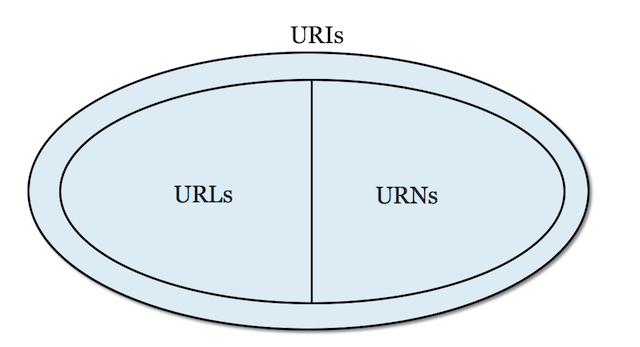

The Architecture of World Wide Web

The World Wide Web has three parts: Identification (Document Naming Scheme), Representation (Document Formats) and Interaction (Network Protocols). In order to provide access from any browsing platform, the World Wide Web requires a client-server model, which consists of clients, servers and protocols. Clients are computers, cellphones or other devices. They are responsible for resolving a unique address into a document using browsers. Servers are built to store documents and provide them in common formats.
Fig 1 The outline of W3 Architecture

Fig 2 Client-Server Model
Document Naming Scheme
The common naming scheme is very impotant for World Wide Web to provide a method for the client to find the server and for the server to find the document. In the W3 model, the URIs (Uniform Resource Identifiers) are introduced and used to indentify the name of resouces. This is rather like the telephone number of a computer on the Internet, together with information appended to specify the exact resource to be sent to your device. By assigning distinct URIs to distinct resources, the hypertext link to a document can be specified.
The URIs mainly consist of the URLs (Uniform Resource Locations) and the URNs (Uniform Resource Names). The URLs are a subset of the URIs that specifies indentified the locations of resources available and the mechanism for retrieving them. For example, 'http://www.soton.ac.uk' is an URL for University of Southampton. Specifically, 'http', which means Hpyertext Transfer Protocoal, is the name of the network protocol used to access the data across the Internet. 'www.soton.ac.uk' is the domain name of the server on which the information is stored. The 'www' indicates that this is a World Wide Web server. 'uk' is the country code for the United Kingdom. URNs identify resources by unique and persistent names, like isbn.
Fig 3 URIs, URLs and URNs
Document Formats
Orginally, the W3 model provides a common data format in the SGML (Standard Generalized Markup Language) style for basic hypertext and this allows every World Wide Web browser to parse this simple format. The first data format used on the W3 model is HTML (HyperText Mark-up Language), which is a universally understood publishing language.
Here is an exapmle of HTML file. Each HTMl file contains different tags. Using these tags, developers can specify which parts of text are to be headings, paragraphs, and which parts are in bold-face type, in italicized type and so on.

Fig 4 Example of HTML
Since then, a great number of data formats are defined (see fig 1). For example, CSS (Cascading Style Sheets) is a style sheet language. which can be used by developers to describe the presentation of a document written in HTML.
Network Protocols
The interactions between clients and documents or resources are defined in terms of network protocols that transmit files between servers and clients. HTTP is the most common network protocol in the World Wide Web. When the user clicks on a hyperlink, the computer will send a request to the servers. Then, HTTP will send a 'message' that fetches files to and from servers, and then delivers results to user's computer. HTTP has its counterparts in other Internet services: FTP (file transfer protocol) and NNTP (network news transfer protocol) are protocols that obtain different sorts of information from across the Internet. (see fig 1).
When the user clicks on a hypertext link, the results need to be sent across the Internet as quickly as possible, and then to be understood by a server at the other end. All instructions or messages are transfered or controled by network protocols.